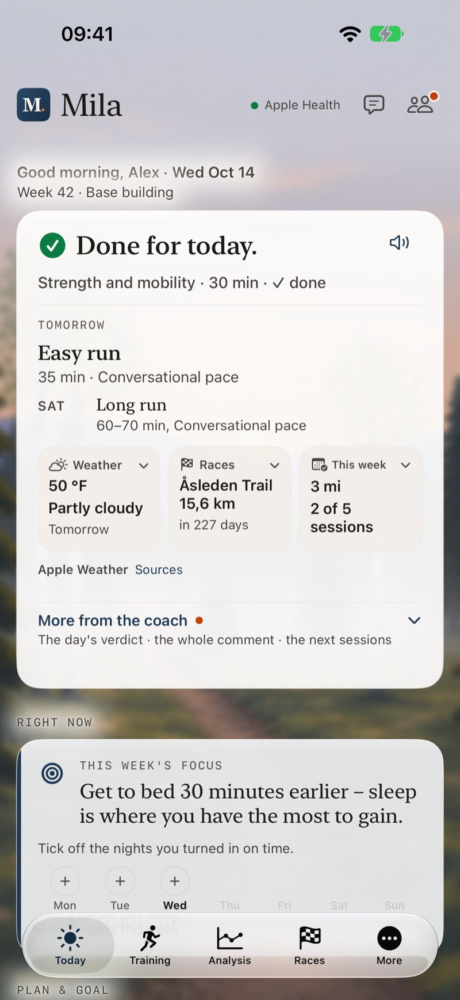
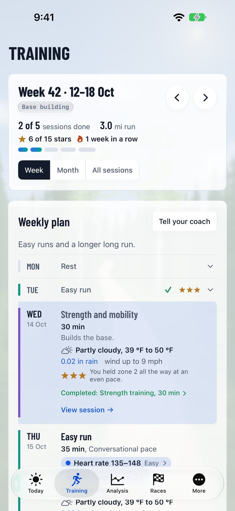
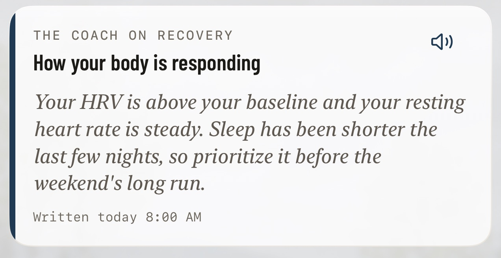

The right run, on the right day.
A coach that reads your body and your life every morning – all the way to the finish line.
Mila starts from your own data, your form today and your goal. Every morning the coach's call comes first – ready, a normal day or take it easy – then today's session as it stands: training that fits your life, makes you stronger toward your goal and never asks you to decode a single chart.


More from training, less to figure out
The right run every day – shaped by how you feel and how life looks.
Why Mila is different
Your watch measures. Mila turns it into the right run for you.
The Mila feeling
The right run, on the right day. Everything in Mila starts from that.

You in the middle. The coach sees the whole picture.
Every morning the coach tells you what fits today. Runs, food, shoes, sleep and everyday life fit together – and it all starts from you.
- Runstoday’s run
- Racesall the way to the finish
- Your bodyheart rate and feel
- Sleep and restrest counts
- Foodfuel and recovery
- Shoeswear, the next pair
- Clothesfor the weather
- Everyday lifework and travel
A coach one tap away
Every morning you get the coach's call and today's session, the best time to run and what to wear for the weather. You can have the note read aloud. When life changes, tell your coach in your own words, and when you wonder about something, ask the coach – the answers know your data. When the week ends – Sunday evening, or by Monday morning – the weekly review and next week's plan arrive.

Mila on your wrist
Mila's Apple Watch app shows your day, records your race and asks how your run went. Other watches work through Apple Health.
Everything a runner needs
From the first easy run to race day.
Weekly plan and analysis
A weekly plan with strength programs and sessions you can move. After the run, planned vs. completed, the route colored by pace and similar runs. Your patterns, Compared with, records over time and My running year.
Mila's race directory
Official races with map, elevation profile, aid stations and the organizer's link – or upload the course yourself (GPX, KML, TCX or zip). Every race in the directory also has its own page: milacoach.app/en/races.
Before and after the race
A forecast, a pace plan for the hills, a fueling plan, Am I ready?, a race guide and race morning. Afterwards, splits against the plan, the coach's race analysis and your official result.
Running form
Film in the app or pick a video. Only still frames are sent, with faces blurred, and the video never leaves your phone. The coach gives observations and drills, woven into your plan and followed up over time.
Shoes
The coach judges how long each shoe lasts for you – roughly how many kilometers and weeks at your pace. Import your shoe log from a picture or a CSV file.
Food
Photograph or describe a meal, and the coach estimates it and links it to your training. Correct it in your own words, show it without numbers, or log with Siri.
Share
Images of runs and races with a backdrop in Mila's style from the place, a suggested text and a line from the coach.
In your calendar
The coach's runs in the calendar you choose, at the best time for the weather.
Started in a few minutes
Tell the coach about yourself and your goal, see how the coach understood you, and get your first week. Try Mila Coach free for a week.
Works with your watch
Mila reads your runs from Apple Health, so you don't need a particular watch.
Guides
Your data stays yours
Apple Health data is read on your phone; a summary goes to the coach, after your consent, together with what you connect or send (Polar, meal photos, pictures of your shoe log, still frames from running-form videos). Your account is stored in the EU (Ireland). The coach's texts are written by an external AI service in the USA under the EU Standard Contractual Clauses. Mila never sells your data or uses it for advertising, and you can delete your account and everything in it at any time. Mila gives general training advice, not medical advice.
The right run, on the right day.